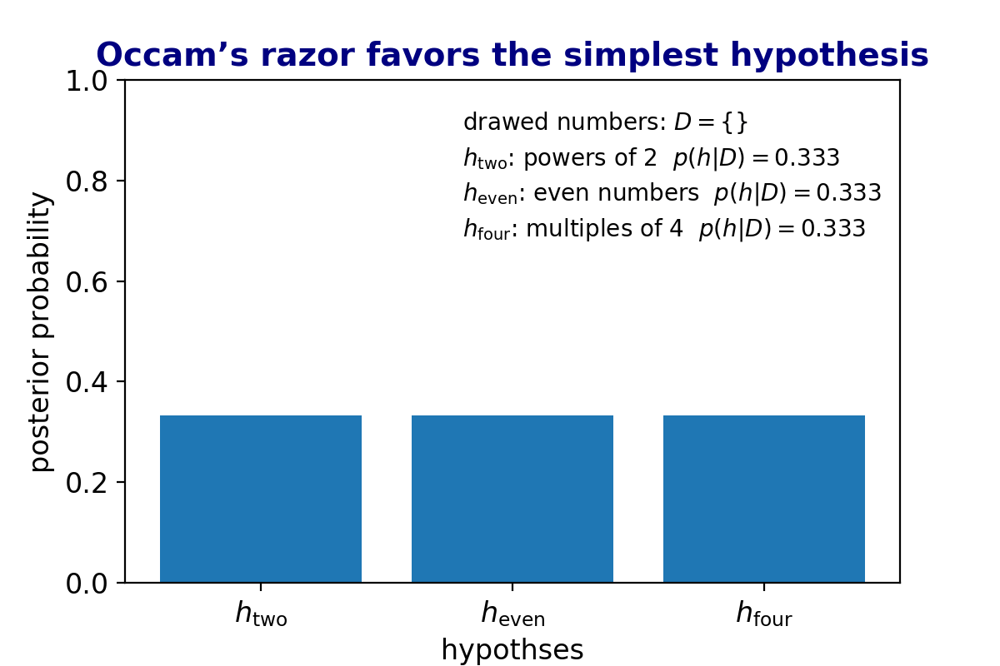

Demonstating Occam’s razor using a nice explanation from KPM [1].

Imagine that one picks 4 balls from a box of balls, each labeled a number smaller than 50 and gets the result $\mathcal{D} = \{ 32, 8, 4, 16 \} $. The numbers on the balls may follow one of the following hypotheses:
$\mathcal{h_{\mathrm{two}}}$: all number powers of 2
$\mathcal{h_{\mathrm{even}}}$: all numbers are even
$\mathcal{h_{\mathrm{four}}}$: all numbers are multiples of 4
Which is the most probable?
import numpy as np
import matplotlib.pyplot as plt
import imageio, glob
# num of balls in the box given hypothesis h_i
# h(two) : powers of 2
# h(even) : even numbers
# h(four) : multiples of 4
# balls obtained {32, 8, 4, 16}
results = np.array([32, 8, 4, 16])
N = np.array([5, 29, 13])
# prior: p(h_i)
prior = np.array([1./3, 1./3, 1./3])
# probability given hypothsis: p(D|h_i)
conditional_prob = np.reciprocal(N, dtype = np.float)
# posterior: p(h_i|D) proportional to p(h_i)p(D|h_i)
def calc_posterior(n):
if n == 0:
return prior
else:
return np.einsum('i, i -> i', calc_posterior(n-1) , conditional_prob)
res = ['32', '8', '4', '16']
for i in range(5):
posterior = calc_posterior(i)
norm_posterior = posterior / np.sum(posterior)
plt.bar([r'$h_{\mathrm{two}}$', r'$h_{\mathrm{even}}$', r'$h_{\mathrm{four}}$'], norm_posterior)
plt.text(.85, .9, 'drawed numbers: ' + r'$D = \{ $'+ ', '.join(res[0:i]) +r'$ \}$')
plt.text(.85, .83, r'$h_{\mathrm{two}}$' + ': powers of 2' + ' ' + r'$p(h|D)=$' + '{:.3f}'.format(norm_posterior[0]))
plt.text(.85, .76, r'$h_{\mathrm{even}}$' + ': even numbers' + ' ' + r'$p(h|D)=$' + '{:.3f}'.format(norm_posterior[1]))
plt.text(.85, .69, r'$h_{\mathrm{four}}$' + ': multiples of 4' + ' ' + r'$p(h|D)=$' + '{:.3f}'.format(norm_posterior[2]))
plt.title('Occam’s razor favors the simplest hypothesis', fontsize = 14, color = 'navy', fontweight='bold')
plt.xlabel('hypothses', fontsize = 14)
plt.ylabel('posterior probability', fontsize = 14)
plt.ylim(0, 1)
plt.yticks(fontsize = 14)
plt.xticks(fontsize = 14)
plt.tight_layout()
plt.savefig('barplot_{}'.format(i))
plt.clf()
References:
[1] Murphy, Kevin P. Machine learning: a probabilistic perspective. MIT press, 2012.